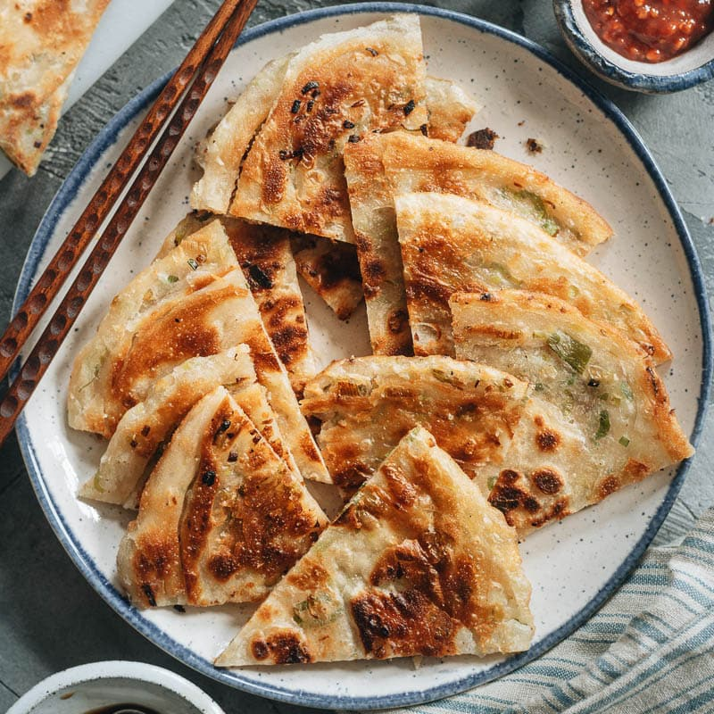

Chinese Scallion Pancakes

Description
Scallion pancakes are a popular dish in China, and available from restaurants
and street vendors. There are many different regional variations. These can be
frozen after step 3, and thawed and finished cooking when ready to eat.
Recipe Link
Prep: 30 mins
Cook: 15 mins
Additional: 1 hr
Total: 1 hr 45 mins
Servings: 4
Yield: 4 servings
Ingredients
- 2 cups all-purpose flour
- 1 tablespoon salt, divided
- ¾ cup boiling water
- ½ cup cold water, or as needed
- vegetable oil, or as needed, divided
- 1 bunch green onions (scallions), minced
Steps
-
Mix flour and 1 teaspoon salt together in a large bowl; pour in boiling
water and quickly mix together until water is absorbed. Work cold water,
about 1 tablespoon at a time, into flour mixture just until dough forms.
Knead dough for 10 minutes. Cover bowl with a damp cloth and let dough
rest for 40 minutes.
-
Turn dough onto a lightly floured work surface; divide into 4 equal
pieces.
-
Roll 1 piece of dough into a large thin round; brush the top with
vegetable oil and sprinkle with about 1/2 teaspoon salt and 1/4 the green
onions. Pick up 1 end of the round and roll dough around green onions into
a long scroll-shape. Take 1 scroll end and roll dough into a disk. Repeat
with remaining dough, letting each disk rest for 10 minutes.
-
Heat about 1 tablespoon vegetable oil in a skillet over medium-low heat.
Place 1 disk on a floured surface and roll into a 1/2-inch thick round;
cook in the hot oil until golden brown, 2 to 3 minutes per side. Repeat
with remaining disks.